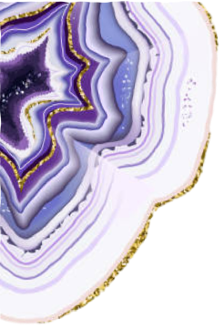
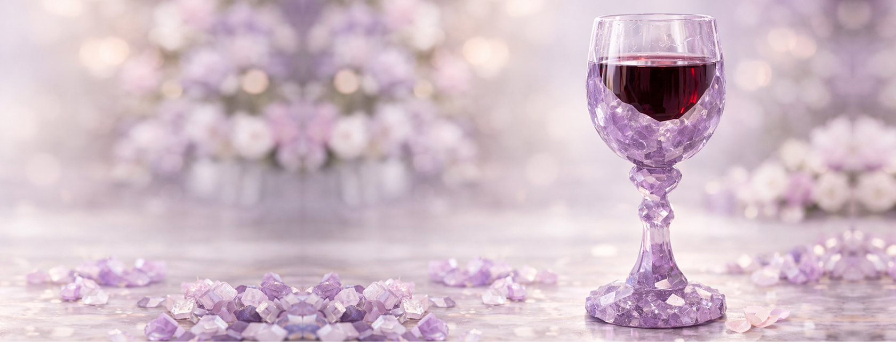

Our restaurant is not only about delicious food, but also about beauty and aesthetic pleasure. And the beauty of our establishment is emphasized by our customers, who are as beautiful as amethyst.
ABOUT US
Long ago, in a world where the gods still intervened in human destinies, an event took place that was preserved not only in legends but also in the memory of stone. Dionysus, the god of wine and passion, seized by anger, swore to punish the first being he encountered on his path. Fate, however, led him to a young maiden named Amethyst—pure of heart and bright of soul. To save her, the goddess Artemis transformed the girl into a transparent crystal. Witnessing this, Dionysus realized his own cruelty and, filled with remorse, poured wine over the stone. Thus the crystal was tinged a deep violet—the color of wisdom, calm, and harmony. Centuries passed. The legend of amethyst as a symbol of balance, protection from intoxication, and excess has reached our days. It was this very legend that inspired the creation of the restaurant “Amethyst”—a place where wine does not cloud the mind and food does not overwhelm, but instead restores inner balance. “Amethyst” has become a space for tranquil conversations, profound flavors, and sincere encounters. Here, every dish is like an echo of an ancient legend, and every guest is as welcome as the light passing through a violet crystal.
100+
Our bar has about 100 varieties of imported wines.
Do you want to immerse yourself in ancient Greece and taste the drink of the gods? We are waiting for you at "Amethyst"
